- 01 第一堂“云原生”课.md.html
- 02 容器基本概念.md.html
- 03 Kubernetes 核心概念.md.html
- 04 理解 Pod 和容器设计模式.md.html
- 05 应用编排与管理：核心原理.md.html
- 06 应用编排与管理.md.html
- 07 应用编排与管理：Job & DaemonSet.md.html
- 08 应用配置管理.md.html
- 09 应用存储和持久化数据卷：核心知识.md.html
- 10 应用存储和持久化数据卷：存储快照与拓扑调度(至天).md.html
- 11 可观测性：你的应用健康吗？（莫源）.md.html
- 12 可观测性-监控与日志（莫源）.md.html
- 13 Kubernetes 网络概念及策略控制（叶磊）.md.html
- 14 Kubernetes Service（溪恒）.md.html
- 15 从 0 开始创作云原生应用（殷达）.md.html
- 16 深入解析 Linux 容器（华敏）.md.html
- 捐赠
15 从 0 开始创作云原生应用（殷达）
一、 云原生应用是什么？
首先我们来思考一个问题：云原生应用是什么？
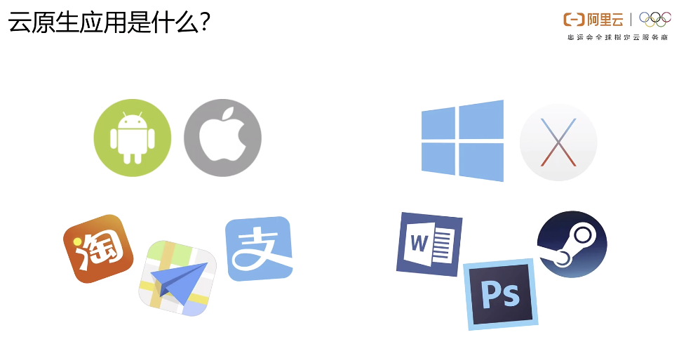
在生活中我们会和各种各样的应用打交道，有时候会在移动端上使用淘宝购物、使用高德导航，在 PC 端使用 word 编辑文稿、使用 Photoshop 处理相片······这些在各类平台上的应用程序对用户而言，大多数都只需要用户点击安装就可以使用了。那么对于云上的应用，或者说在我们今天的云上、在 Kubernetes 上的应用，是什么样子的呢？
想象一下，如果我们要把一个应用程序部署到云上都需要做什么呢？
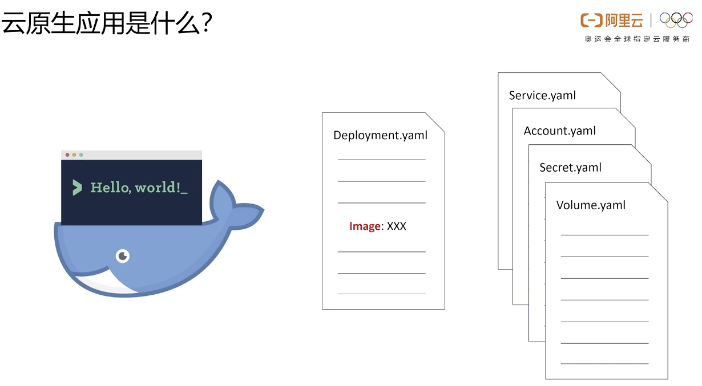
首先我们要准备好它所需的环境，打包成一个 docker 镜像，把这个镜像放到 deployment 中。部署服务、应用所需要的账户、权限、匿名空间、秘钥信息，还有可持久化存储，这些 Kubernetes 的资源，简而言之就是要把一堆 yaml 配置文件布置在 Kubernetes 上。
虽然应用的开发者可以把这些镜像存放在公共的仓库中，然后把部署所需要的 yaml 的资源文件提供给用户，当然用户仍然需要自己去寻找这些资源文件在哪里，并把它们一一部署起来。倘若用户希望修改开发者提供的默认资源，比如说想使用更多的副本数，或者是修改服务端口，那他还需要自己去查：在这些资源文件中，哪些地方需要相应的修改。同时版本更替和维护，也会给开发者和用户造成很大的麻烦，所以可以看到最原始的这种 Kubernetes 的应用形态并不是非常的便利。
二、Helm 与 Helm Chart
Helm 是什么？
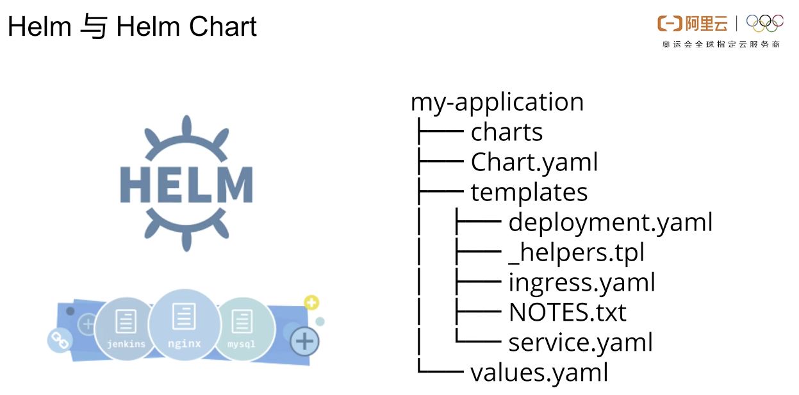
我们今天的主角：Helm，就在这样的环境下应用而生。开发者安装 Helm Chart 的格式，将应用所需要的资源文件都包装起来，通过模板化的方法，将一些可变的字段，比如说我们之前提到的要暴露哪一个端口、使用多少副本数量，把这些信息都暴露给用户，最后将封装好的应用包，也就是我们所说的 Helm Chart 集中存放在统一的仓库里面供用户浏览下载。
那么对于用户而言，使用 Helm 一条简单的命令就可以完成应用的安装、卸载和升级，我们可以在安装完成之后使用 kubectl 来查看一下应用安装后的 pod 的运行状态。需要注意的是，我们证明使用的是 Helm v3 的一个命令，与目前相对较为成熟的 Helm v2 是有一定的区别的。我们推荐大家在进行学习尝鲜的过程中使用这个最新的 v3 版本。
如何去创作一个 Helm 应用
站在开发者的角度上，我们应该如何去创作一个 Helm 应用呢？首先我们需要一个准备部署的镜像，这个镜像可以是一个 JAVA 程序、一个 Python 脚本，甚至是一个空的 Linux 镜像，跑几条命令。
编写 Golang 程序
如上图所示，这里我们是用 Golang 编写一个非常简单的 Hello World 的 http 服务，并且使用 docker 进行一个打包。Golang 的程序大致是长这个样子的，包括从环境变量中读取 pod、username 两个参数，在指定的端口上提取 http 服务，并返回相应的响应信息。
构建 Docker 镜像
打包用的 Dockerfile 是长这个样子的。在这里面，我们首先对 Golang 代码进行编译，然后将编译后的程序放到 03：53 的一个镜像中来缩小镜像的体积。我们看到上文所说的两个环境变量只有 port 在这里面进行一个设置，username 将会在后续作为应用的一个参数报告给用户，所以在这里面我们先不做设置，在 docker 构建好镜像之后，我们把这个镜像上传到仓库中，比如说我们可以上传到 Docker Helm，或者是阿里云镜像仓库中。
创建空白应用
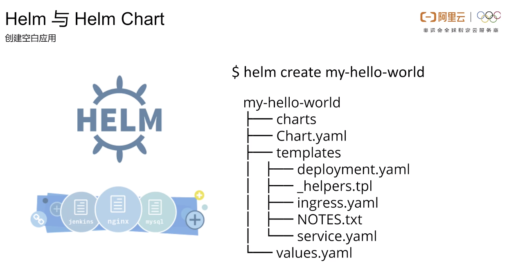
准备工作都做完之后，我们可以开始今天的重头戏，也就是构建这个 Helm Chart 了。首先我们先运行 helm create 的命令，创建一个空白的应用，那么在 create 命令运行完之后，可以看到在这个 Charts 的文件夹下出现了一系列文件和文件夹。
- Charts.yaml 的文件包含了 Helm Chart 的一些基本信息；
- templates 文件夹内则是存放了这个应用所需要的各种 Kubernetes 的资源；
- values.yaml 则是提供了一个默认的参数配置。
Chart 配置
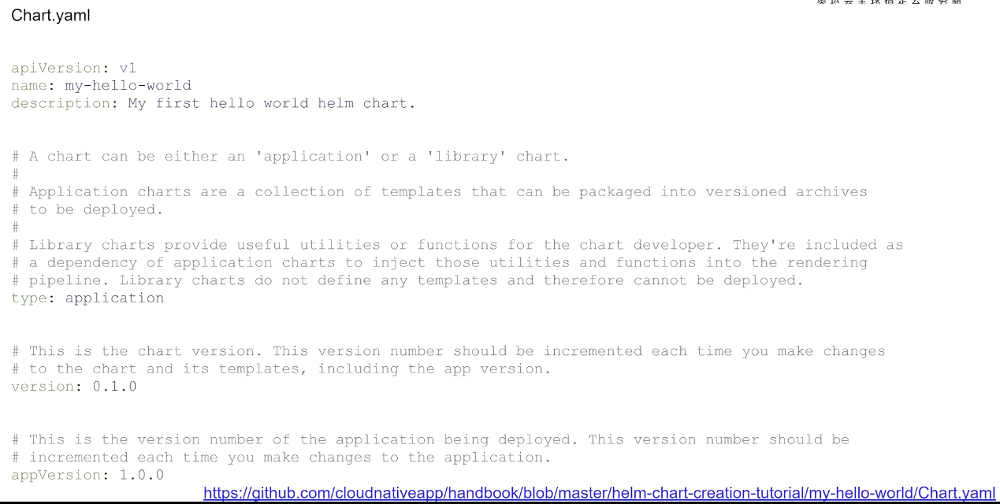
接下来一个一个看：
在根目录下这个 Charts.yaml 文件内声明了当前 Chart 的名称和版本和一些基本信息，那么这些信息会在 chart 被放入仓库之后，供用户浏览和检索，比如我们在这里面可以把 chart 的 description 改成 My first hello world helm chart。
在 Charts.yaml 里面，有两个和版本相关的字段，其中 version 指的是我们当前这个 chart 应用包的版本，而另外一个 appVersion 则指的是我们内部所使用的，比如说在这里面就是我们内部所使用的 Golang 这个程序，我们给它打一个 tag 这个版本。
template 文件夹
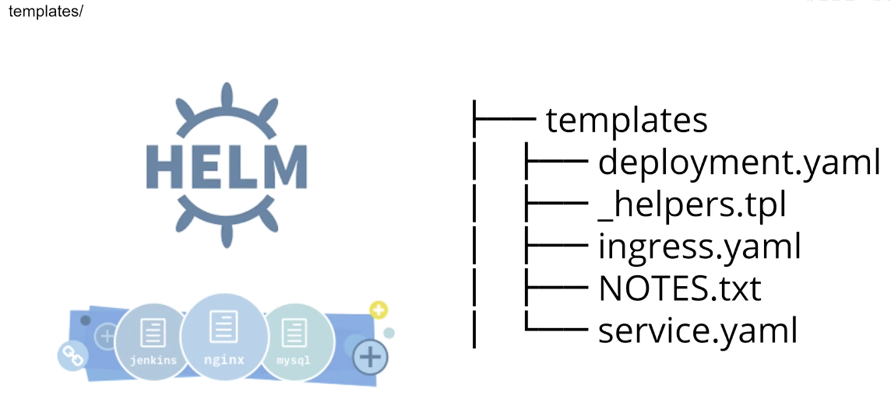
在 templates 这个文件夹下，则是存放各种部署应用所需要的 yaml 文件，比如说我们看到的 deployment 和 service。
我们当前的应用实际上只需要一个 deployment，但是有的应用可能包含多个组件，此时就需要在这个 templates 文件夹下放 deploymentA、deploymentB 等多个 yaml 文件。有时候我们还需要去配置一些 service account secret volume 的内容，也是在这里面去添加相应的内容。
在 templates 文件夹下，这个配置文件可以只是单纯的 Kubernetes.yaml 配置文件，也可以是配置文件的模板，比如说在这看到 deployment.yaml 文件里面，有很多以 {{ }} 包裹起来的变量，这些以 values 或者是 chart 开头的这些变量，都是从根目录下的 chart.yaml 以及 values.yaml 中获取出来的。
如上图所示，看到 replicaCount 实际上就是我们所要部署的副本数量，而 repository 则是指定了镜像的位置。我们之前在 docker 镜像构建中并没有设置 username 的环境变量，这里也是通过类似的方式暴露在了 values.yaml 里面。
Helm 在安装应用的时候，实际上会先去渲染 templates 这个文件夹下的模板文件，将所需要的变量都填入进去，然后再使用渲染后的 kubernetes.yaml 文件进行一个部署，而我们在创建这个 Helm Chart 的过程中，实际上并不需要考虑太多如何去渲染，因为 Helm 已经在客户端安装应用的时候帮我们把这些事情都完成了。
校验与打包
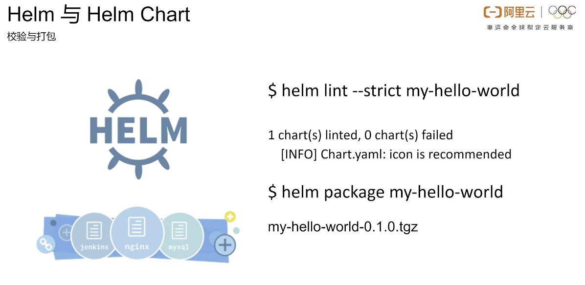
在我们准备好这些应用后，就可以使用 helm lint 命令，来粗略检查一下我们制作的这个 chart 有没有语法上的错误，如果没有问题的话，就可以使用 Helm package 命令，对我们的 chart 文件包进行一个打包。打包之后，我们就可以得到一个 tar 的应用包了，这个就是我们所要发布的一个应用。
安装测试
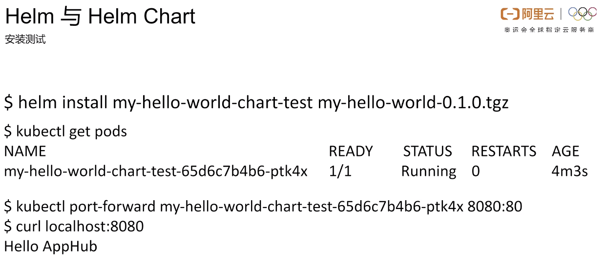
我们可以使用 Helm install 这个命令来尝试安装一下刚刚做好的应用包，然后使用 kubectl 来查看一下 pod 的运行状态，同样可以通过 port-forward 命令来把这个 pod 的端口映射到本地的端口上，这样就可以通过本地的这个 localhost 来访问到刚刚部署好的这个应用了。
参数覆盖
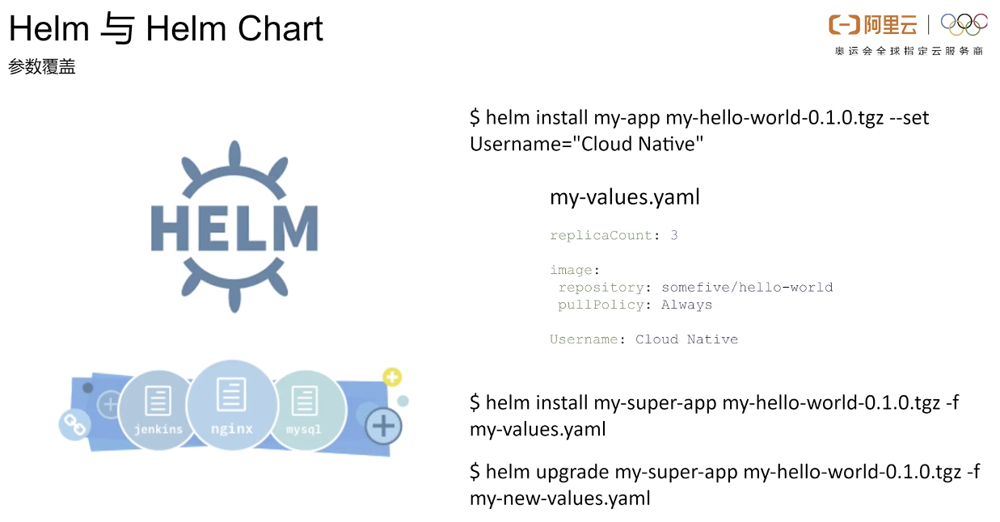
有的同学可能会有疑惑：虽然我们应用开发者把这些可配置的信息都暴露在了 values.yanl 里面，用户使用应用的时候，如果想要修改该怎么办呢？这个答案其实也很简单，用户只需要在 install 的时候使用这个 set 参数设置，把想要设置的参数覆盖掉就行了。
同样，如果用户编写自己的 my-values.yaml 文件，也可以把这个文件在 install 的时候设置起来，这样的话，文件中的参数会覆盖掉原有的一些参数。如果用户不想重新去 install 一个新的 app，而是想要升级原来的 app，他也只需要用这个 helm upgrade 的命令把这个 Helm install 这个命令替换掉就可以了。
修改 NOTES.txt
细心的同学可能会注意到，之前在执行 Helm install 的命令后，这个提示信息其实是有一些问题的，我们看一下之前所写的 deployment.yaml 这个文件，里面可以看到，两个 label 其实是有一定出入的，这个提示信息其实就是在 templates 的 notes 文件下，所以我们只需要到这个文件里面去把这里面的相应信息修改一下就可以了。
升级版本
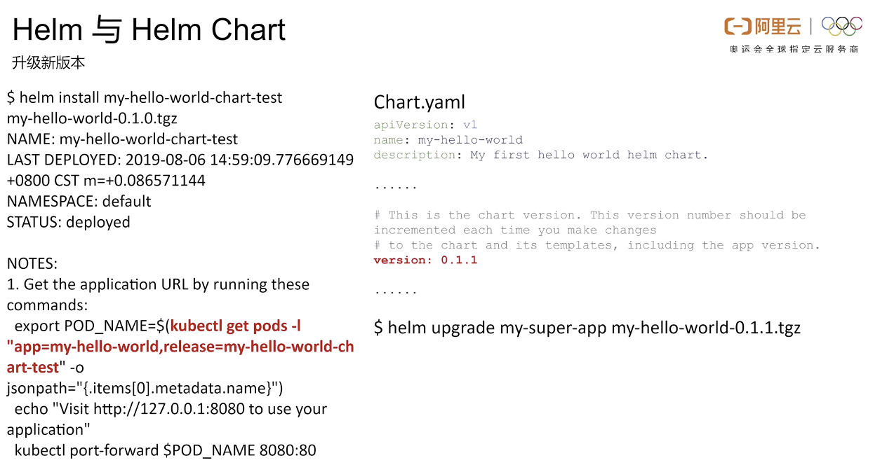
接下来我们回到 chart.yaml 的文件中，更新一下这个 version 字段，重新做一个打包，这样我们就可以对原来部署好的应用做这样一个版本升级了。
应用上传
制作完成的这个应用应该如何和其他人做分享呢？
Helm 官方是通过了 CHARTMUSEUM 这样一个工具，用这个工具，大家可以来构建自己的 chart 仓库，但是自己维护一个 chart 成本会比较高，另外对于使用户而言，如果它使用每一个应用的开发者都有自己的一个仓库的话，那这个用户他就需要去把这些所有的仓库都加入到自己的检索列表里面，这个非常麻烦，非常不利于应用的传播和分享。
三、开放云原生应用中心
应用来源
我们团队最近推出了一个开放云原生应用中心：Cloud Native App Hub。在这里面，我们同步了各种非常流行的应用，同时还提供了一个开发者上传自己应用的一个渠道。
提交应用
在开放云原生应用中心，应用主要是来自两个渠道：
- 一方面我们会定期从一些国外知名的 Helm 仓库同步 chart 资源，同时将其内部使用的一些 docker 镜像也一并做这样的替换。
- 另一方面，我们和 Helm 官方库一样，在 GitHub 上，也接受开发者通过 push request 的形式提交自己的应用。
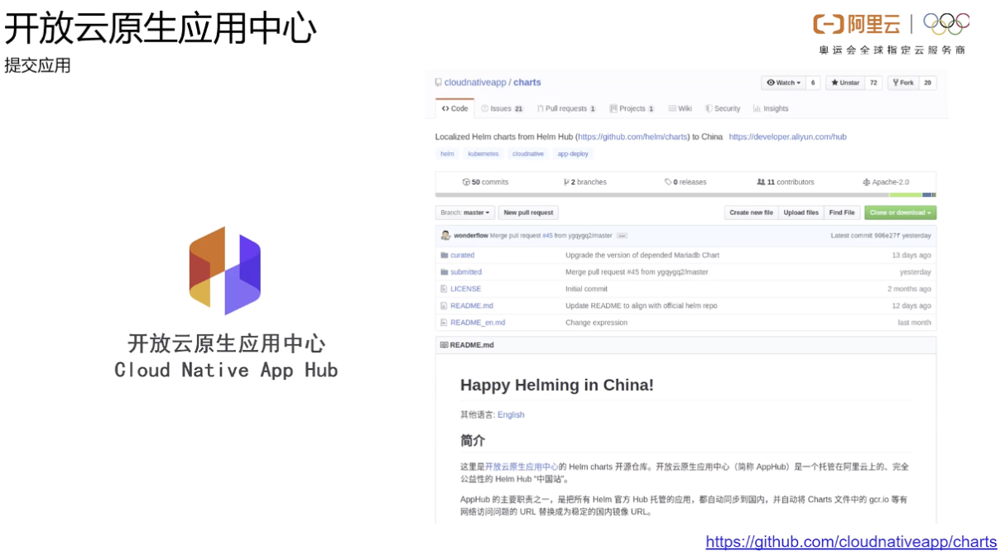
感兴趣的同学可以移步我们的云原生应用中心位于 GitHub 上的 chart 仓库，仿照刚才所讲的 chart 制作流程创作自己的 chart，然后提交 push request。
结束语
最后欢迎大家使用 Helm 和阿里云来进行云原生应用的开发。如果有问题或者希望深入交流讨论的同学，可以扫码加入我们的 Kubernetes 钉钉技术大群，和大牛们一起探索技术。今天的介绍就到这里，谢谢大家。
© 2019 - 2023 Liangliang Lee. Powered by gin and hexo-theme-book.